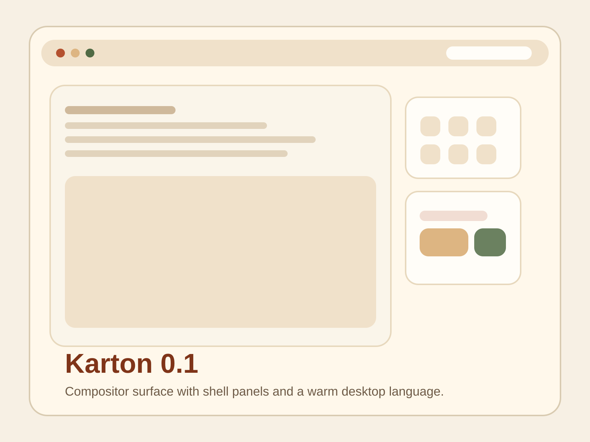
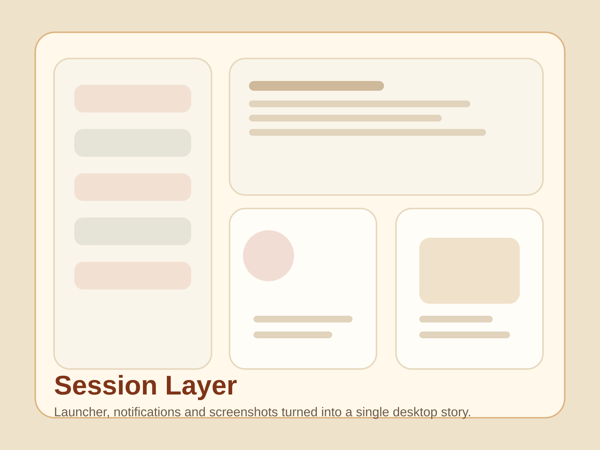
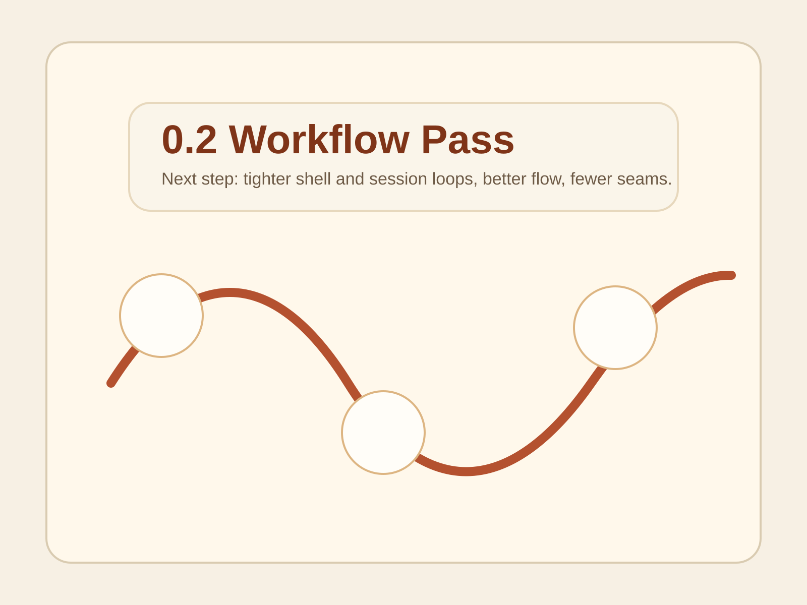
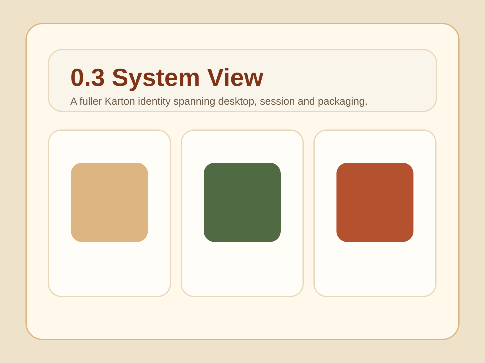

Etap 0.1
Pierwszy spojny shell

 Karton i Tektura
Karton i Tektura
KartonDE
Kliknij w shell poniżej, a strona przewinie do osi czasu. Każdy numer etapu otwiera opis prac, najważniejsze zmiany i odpowiadający im zrzut ekranu.
Os czasu
Kliknij numer etapu. Po prawej stronie od razu podmienimy opis, screenshot i liste rzeczy, ktore wtedy doszly albo byly planowane.
Etap 0.1


Daemony sesyjne, screenshot i powiadomienia jako osobna warstwa uslug.

Drugi etap skupia sie na wygodzie pracy i zamknieciu laczen miedzy komponentami.

Trzeci etap pokazuje kierunek dojscia do pelniejszego i bardziej gotowego systemu.